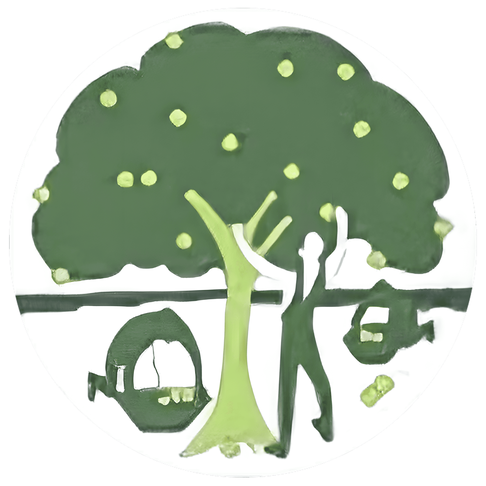

⏮
▶
⏭
🔊
Dawn
Chloë '24
Rachel '25
Allison '26

Progetto Internazionalizzazione UTAH
IIS GREGORIO MENDEL · VILLA CORTESE (MI) × UTAH STATE UNIVERSITY
Tre anni di scambio culturale
Three Years of Cultural Exchange
Italiano
English version